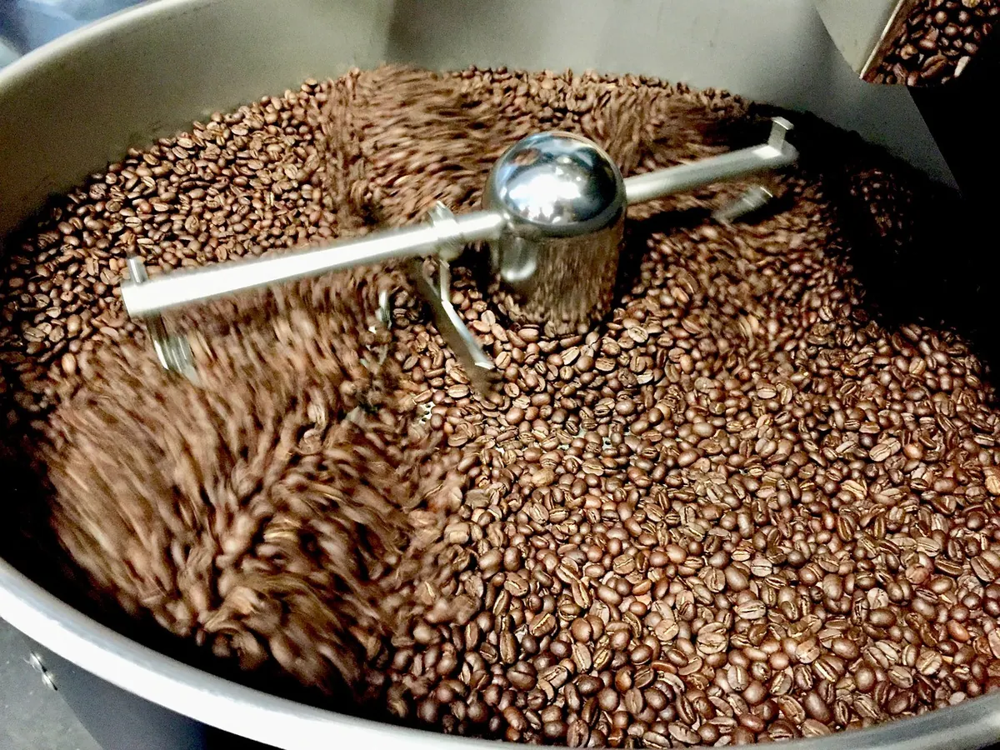
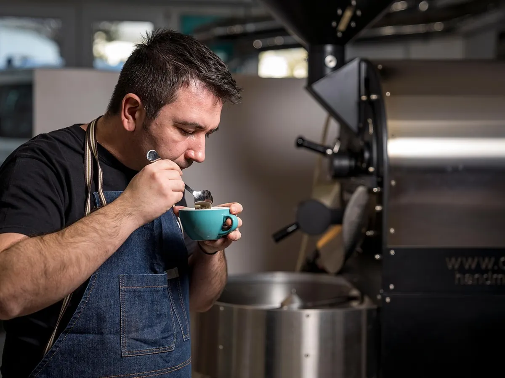
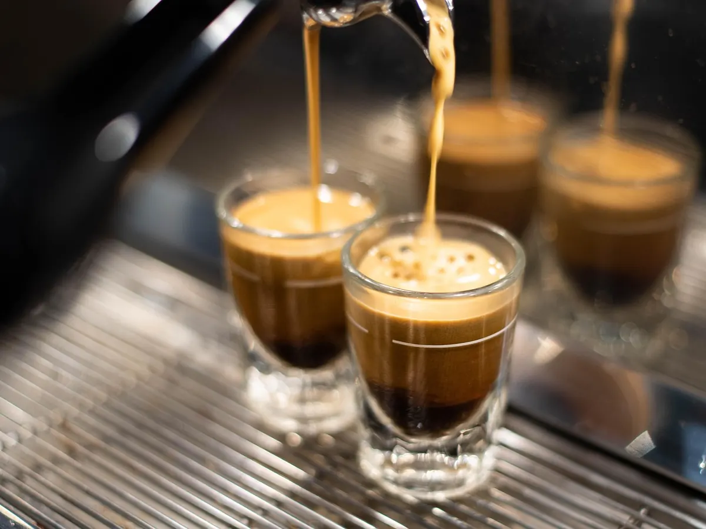

Torréfié mardi. | Chez vous jeudi.
Six cafés, grillés deux fois par semaine dans l’atelier, à Bastia. Jamais plus de dix jours entre le four et votre tasse.
Choisir son caféProchaine torréfaction…
Six cafés.
Touchez une carte pour la retourner : les notes, le prix, et le bouton pour l’ajouter.
Claire ou foncée ?
Le même grain ne donne pas la même tasse selon le temps passé au four. Basculez pour comparer.
Claire
Neuf minutes au four. Le grain garde son fruit : une tasse vive, presque un thé, pour le filtre du matin.
- Acidité
- Amertume
- Corps
L’atelier.



6cafés, et pas un de plus
2torréfactions par semaine
10jours au plus, du four à la tasse
Deux paquets par mois, 22 €.
L’abonnement : on choisit pour vous dans la torréfaction de la semaine, vous recevez deux paquets de 250 g. Sans engagement.
Passez à la boutique.
- AdresseBastia, près de la place (adresse d’exemple)
- HorairesDu mardi au samedi, 8 h – 18 h 30
- Téléphone04 95 00 00 00 (numéro d’exemple)